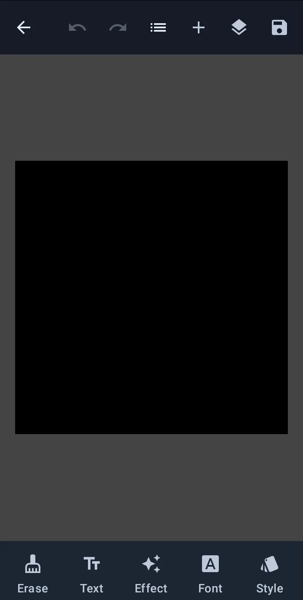
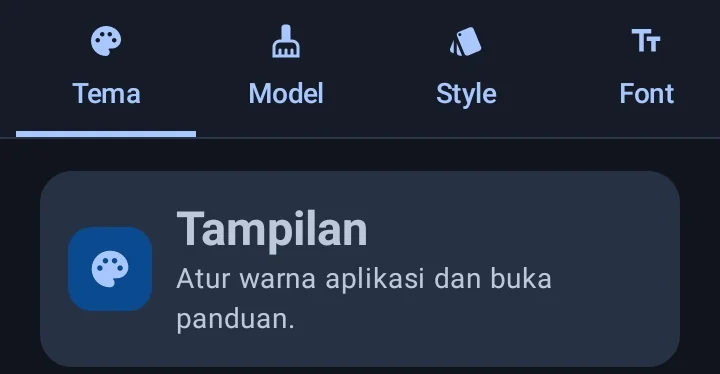
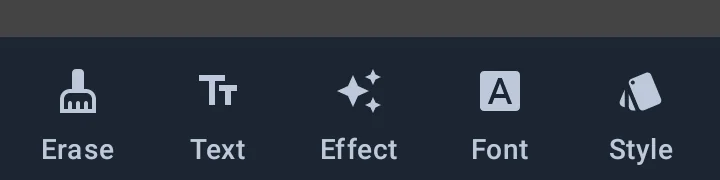

Teks, huruf, dan efek
Cara mengatur huruf, warna, jarak, dan efek pada teks. Semua dijelaskan dari sudut pandang pengguna, bukan istilah teknis.
Daftar isi
Membuat dan mengedit teks
- Pilih alat teks di toolbar, lalu ketuk kanvas untuk membuat kotak teks baru.
- Ketuk dua kali kotak teks untuk membuka editor isinya.
- Ada dua bentuk kotak: BOX (kotak) dan OVAL (bulat). Bentuk ini menentukan bagaimana teks turun baris.
- Saat lebar kotak diubah, teks otomatis ditata ulang dan dipotong per suku kata bila perlu, baik untuk bahasa Indonesia maupun Inggris.

- 1Bar atas — kembali, undo, redo, panel lapisan, dan ikon simpan; riwayat tetap ada walau aplikasi ditutup.
- 2Kanvas — halaman aktif; cubit untuk perbesar, ketuk dua kali teks untuk mengedit isinya.
- 3Bar bawah — Erase, Text, Effect, Font, dan Style; masing-masing membuka panelnya (lihat figure di bagian inpainting untuk penjelasan tiap panel).
Font dan ukuran
Font bawaan bisa diganti langsung dari panel teks. Untuk memakai font sendiri:
Pilih file font .ttf atau .otf dari penyimpanan HP.
Font baru muncul bersama font bawaan. Pilihan Regular, Bold, Italic, dan Bold Italic mengikuti file yang kamu impor.
Font bisa dihapus dari Pengaturan. Proyek yang memakainya perlu diganti ke font lain agar tampilannya tetap sama.

- 1Tab Font — kelola font bawaan dan impor file
.ttfatau.otfdari penyimpanan HP. - 2Kartu Tampilan — mengatur tema aplikasi dan membuka panduan dari Pengaturan.
Jarak huruf dan jarak baris
Di panel teks, bagian Style & Size punya dua pengatur jarak yang disebut Letter spacing dan Line spacing. Keduanya hanya berlaku untuk teks yang sedang dipilih dan langsung terlihat di kanvas.
| Pengatur | Rentang | Arti angkanya |
|---|---|---|
| Jarak huruf | −5% sampai 20% | Menambah atau mengurangi ruang antarkarakter. 0% berarti normal; 10% membuat setiap huruf sedikit lebih renggang. |
| Jarak baris | 80% sampai 200% | Mengatur tinggi setiap baris. 100% berarti normal, 120% lebih lega, dan 80% lebih rapat. |
- Jika jarak baris diisi 0 atau kurang, aplikasi mengembalikannya ke 100% agar teks tetap terbaca.
- Jarak huruf ikut dihitung saat menentukan lebar kotak, jadi teks tidak terpotong di tepi.
- Tombol Reset jarak mengembalikan jarak huruf ke 0% dan jarak baris ke 100%.
Warna, stroke, glow, dan gradient
- Warna & Opacity: warna isi teks dan seberapa pekat warnanya. Angka Opacity rendah membuat teks lebih tembus pandang.
- Stroke: garis tepi teks. Berguna saat teks berada di atas latar yang ramai.
- Drop shadow: bayangan di belakang teks. Atur besar bayangan serta posisi mendatar dan menurunnya.
- Glow: cahaya lembut di belakang teks, dengan warna dan lebar tertentu.
- Gradient: warna teks yang berubah dari satu warna ke warna lain, secara mendatar, menurun, atau mengikuti sudut pilihan. Isi minimal dua warna.
- Motion blur: efek kabur ke satu arah untuk memberi kesan bergerak.
Blend mode, clipping mask, dan Effect
Panel Effect tersedia untuk lapisan (layer) teks maupun gambar. Semua pengaturan tersimpan bersama proyek.
| Kontrol | Fungsi |
|---|---|
| Blend mode | Mengatur cara warna lapisan bercampur dengan lapisan di bawahnya. Contohnya, Multiply membuat hasil lebih gelap seperti tinta spidol, sedangkan Screen membuatnya lebih terang. |
| Clipping mask | Lapisan ini hanya terlihat di bagian yang tertutup bentuk lapisan di bawahnya. Anggap lapisan bawah sebagai cetakan: bagian gambar di luar cetakan disembunyikan. Cocok untuk memasukkan foto ke dalam huruf atau bentuk balon. Aktifkan lewat sakelar di panel Effect atau ikon rantai di daftar lapisan. |
| Radial blur | Bagian tengah tetap tajam, tepinya memutar atau memancar. Pilih mode Putar atau Zoom. Untuk gambar, atur juga titik pusatnya. |
| Texture | Menambahkan tekstur halus seperti butiran, kertas, atau kanvas. Atur kekuatan dan ukurannya. Bagian gambar yang transparan tetap transparan. |
- Lapisan paling bawah belum punya bentuk di bawahnya, jadi belum bisa memakai clipping mask.
- Kalau lapisan bawah disembunyikan, lapisan yang memakai clipping mask ikut tidak terlihat.
- Efek gambar yang berat diproses di belakang layar. Pratinjau muncul setelah pengatur dilepas.
- Blend mode dan clipping mask ikut tersimpan saat ekspor, bukan hanya terlihat di kanvas.
Menghapus teks lama (inpainting)
Sebelum menempel teks baru, bersihkan teks asli dengan alat seleksi:
- Brush dan Eraser: Brush menambah area seleksi; Eraser menguranginya. Keduanya menandai area, bukan langsung menghapus gambar.
- Lasso: membuat area seleksi bebas dengan menarik garis.
- Magic Wand: mengetuk satu titik, lalu memilih area di sekitarnya yang warnanya mirip. Naikkan toleransi bila ingin mencakup lebih banyak warna.
Panel Hapus Objek berisi tombol Bersihkan, Invert Seleksi, dan Hapus Area Terpilih. Tombol hapus baru aktif setelah ada area yang dipilih.
Setelah area seleksi siap, pilih cara menambalnya:
- Telea (OpenCV): cepat dan sepenuhnya offline. Cocok untuk latar yang sederhana.
- LaMa AI: model AI sekitar 196 MB yang diunduh sekali ke perangkat. Cocok untuk latar rumit. Jika model belum tersedia atau gagal dimuat, MochiTs otomatis memakai Telea.

- 1Erase — panel Hapus objek: Bersihkan, Invert Seleksi, dan Hapus Area Terpilih.
- 2Text — editor isi balon; teks bisa diedit langsung di kanvas.
- 3Effect — pengaturan blend mode, clipping mask, dan efek visual.
- 4Font — font, ukuran, dan bobot huruf pada balon terpilih.
- 5Style — warna, stroke, glow, dan gradient.